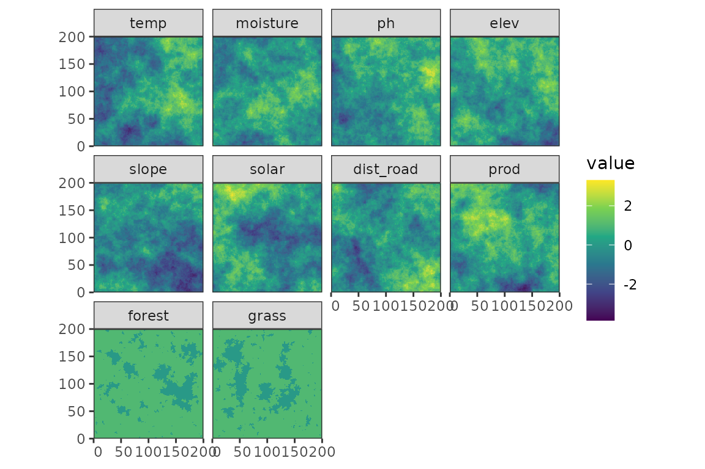
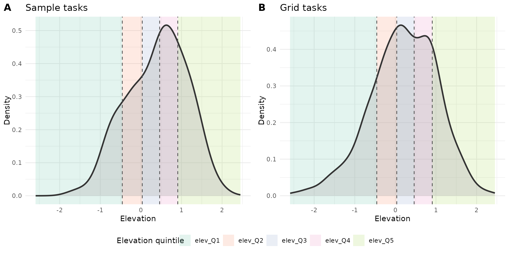

TWCV
twcv.RmdIntroduction
Target-Weighted Cross-Validation (TWCV) was developed by Brenning and Suesse (2026). It uses iterative calibration weighting to align the validation task (predictor values of the training points and nearest-neighbour distances (NNDs) between folds) to the prediction task (predictor values of the prediction points and NNDs between prediction and training points).
The more detailed workflow is:
- Compute CV losses by training a model on the training folds fold and predicting to the held-out fold
- Compute the CV validation task and the prediction task (NNDs and predictor values)
- Calculate quantiles of the balancing variables for training and prediction points separately (NNDs and predictors)
- Calculate the proportion of training points and prediction points falling in each quantile
- Applies iterative proportional fitting (“raking”) to align the
proportions of the training points to those in the prediction points:
- For each balancing variable, calculate the current number of training points in each quantile.
- Calculate the target number of training points in each quantile based on the target proportions.
- Calculate multiplicative adjustment factors that transform the current counts to the target counts.
- Because the weighting is done for each variable seperately (“marginal”), correcting one variable can disturb variables adjusted earlier.
- Repeat this process until the maximum relative change in weights between successive iterations falls below a threshold.
- Normalize weights and shrink them towards 1 to mitigate extreme values.
Setup
library(PDAV)
library(dplyr)
#>
#> Attaching package: 'dplyr'
#> The following objects are masked from 'package:stats':
#>
#> filter, lag
#> The following objects are masked from 'package:base':
#>
#> intersect, setdiff, setequal, union
library(caret)
#> Loading required package: ggplot2
#> Loading required package: lattice
library(terra)
#> terra 1.9.27
library(sf)
#> Linking to GEOS 3.12.1, GDAL 3.8.4, PROJ 9.4.0; sf_use_s2() is TRUE
library(simsam)
library(ggplot2)
library(cowplot)
library(tidyterra)
#>
#> Attaching package: 'tidyterra'
#> The following object is masked from 'package:stats':
#>
#> filter
library(ggnewscale)
set.seed(100)Simulate predictors and response
r <- PDAV:::generate_rast()
predictor_stack <- r[[setdiff(names(r), "outcome")]]
cate_rasters <- which(names(r) %in% c("forest", "grass"))
n_sample <- 100
samples <- sam_field(
x = r,
size = n_sample,
method = sample_clustered(nclusters = 10, radius = 30, na.rm = TRUE)
)
predictor_vars <- names(predictor_stack)
env_vars <- predictor_vars
task_vars <- env_vars
response <- "outcome"
pred_points <- spatSample(predictor_stack, 1000, method = "regular", na.rm = TRUE, as.points = TRUE) |>
st_as_sf()
sample_coords <- st_coordinates(samples) |> as.data.frame() |> rename("x" = X, "y" = Y)
grid_coords <- st_coordinates(pred_points) |> as.data.frame() |> rename("x" = X, "y" = Y)
sample_dat <- st_drop_geometry(samples) |>
mutate(id = row_number()) |>
cbind(sample_coords)
grid_dat <- st_drop_geometry(pred_points) |>
mutate(id = row_number()) |>
cbind(grid_coords)
twcv_specs <- PDAV:::make_twcv_specs(
predictor_vars = predictor_vars,
include_distance = TRUE,
balance_by = 0.2,
shrink_lambda = 0.2,
name = "twcv_extended"
)
fit_fun <- function(train_dat, model, response, predictor_vars = NULL, ...) {
if (is.null(predictor_vars)) {
predictor_vars <- setdiff(names(train_dat), response)
}
dat <- train_dat[, c(response, predictor_vars), drop = FALSE]
ranger::ranger(
formula = stats::reformulate(predictor_vars, response = response),
data = dat,
...
)
}
predict_fun <- function(fit, newdata, ...) {
predict(fit, data = newdata)$predictions
}
model = "rf"
folds <- sample(rep(1:5, length.out = n_sample))
Figure 1: The predictor stack
Run TWCV
1. Compute CV losses
Iterate over each fold and calculate the predictions and the resulting pointwise CV error:
pred <- PDAV:::compute_cv_predictions(
sample_dat = sample_dat,
folds = folds,
model = model,
response = response,
fit_fun = fit_fun,
predict_fun = predict_fun
)
pe <- PDAV:::compute_pointwise_errors(
obs = sample_dat[[response]],
pred = pred
)
cv_losses <- data.frame(
id = sample_dat$id,
fold = folds,
obs = pe$obs,
pred = pe$pred,
error = pe$error,
se = pe$se,
ae = pe$ae
)
knitr::kable(head(cv_losses))| id | fold | obs | pred | error | se | ae |
|---|---|---|---|---|---|---|
| 1 | 4 | 0.1397832 | 0.1249945 | 0.0147887 | 0.0002187 | 0.0147887 |
| 2 | 2 | -0.0176524 | -0.0110821 | -0.0065702 | 0.0000432 | 0.0065702 |
| 3 | 4 | 0.0752842 | 0.0918489 | -0.0165646 | 0.0002744 | 0.0165646 |
| 4 | 2 | 0.1329214 | 0.1280110 | 0.0049104 | 0.0000241 | 0.0049104 |
| 5 | 5 | 0.1226969 | 0.0279835 | 0.0947133 | 0.0089706 | 0.0947133 |
| 6 | 1 | 0.0010283 | 0.0558123 | -0.0547840 | 0.0030013 | 0.0547840 |
2. Compute the CV validation task and the prediction task
d_sample <- PDAV:::nearest_neighbor_distance(
query_coords = sample_dat[, c("x", "y")],
ref_coords = sample_dat[, c("x", "y")],
exclude_self = TRUE
)
d_grid <- PDAV:::nearest_neighbor_distance(
query_coords = grid_dat[, c("x", "y")],
ref_coords = sample_dat[, c("x", "y")],
exclude_self = FALSE
)
sample_tasks <- data.frame(
id = sample_dat$id,
d = d_sample,
stringsAsFactors = FALSE
)
grid_tasks <- data.frame(
id = grid_dat$id,
d = d_grid,
stringsAsFactors = FALSE
)
for (v in env_vars) {
sample_tasks[[v]] <- sample_dat[[v]]
grid_tasks[[v]] <- grid_dat[[v]]
}
tasks <- list(
sample_tasks = sample_tasks,
grid_tasks = grid_tasks
)
sample_desc <- tasks$sample_tasks
idx <- match(cv_losses$id, sample_desc$id)
# combine CV losses with task descriptors for training points
out <- cv_losses
for (v in task_vars) {
if (!(v %in% names(sample_desc))) {
stop("Variable '", v, "' missing in sample_tasks.", call. = FALSE)
}
out[[v]] <- sample_desc[[v]][idx]
}
# Calculates the NND between folds based on distance matrix / matrices
d_realized <- PDAV:::compute_cv_prediction_distances(
sample_dat = sample_dat,
folds = cv_losses$fold
)
# Update the NND attached to the training points from NND between points to NND between folds
idx_d <- match(out$id, sample_dat$id)
out$d <- d_realized[idx_d]
aug <- list(
losses = out,
grid_tasks = tasks$grid_tasks
)
knitr::kable(head(aug$losses))| id | fold | obs | pred | error | se | ae | temp | moisture | ph | elev | slope | solar | dist_road | prod | forest | grass | d |
|---|---|---|---|---|---|---|---|---|---|---|---|---|---|---|---|---|---|
| 1 | 4 | 0.1397832 | 0.1249945 | 0.0147887 | 0.0002187 | 0.0147887 | -1.1145626 | -0.3639978 | 0.2936799 | -0.9413812 | -1.2358055 | -1.4212193 | 0.0357406 | 1.9760488 | 1 | 0 | 8.944272 |
| 2 | 2 | -0.0176524 | -0.0110821 | -0.0065702 | 0.0000432 | 0.0065702 | -1.3710641 | -0.2803991 | 0.2686797 | -0.2147359 | -0.9426550 | -1.6820780 | -0.0153302 | 2.4263415 | 0 | 0 | 7.211103 |
| 3 | 4 | 0.0752842 | 0.0918489 | -0.0165646 | 0.0002744 | 0.0165646 | 0.3120093 | -0.2115194 | 0.7028813 | 0.3614319 | -0.0620572 | -0.5344121 | -0.9786035 | 2.5397532 | 1 | 1 | 4.472136 |
| 4 | 2 | 0.1329214 | 0.1280110 | 0.0049104 | 0.0000241 | 0.0049104 | -0.6471287 | 0.2688474 | 0.2308276 | -0.2196162 | -1.2286240 | -1.9005321 | -0.0302929 | 1.6052996 | 1 | 0 | 3.162278 |
| 5 | 5 | 0.1226969 | 0.0279835 | 0.0947133 | 0.0089706 | 0.0947133 | 1.1932176 | 0.7785522 | -0.7521968 | 0.6174387 | 0.0287002 | -1.5917161 | 0.3739811 | 0.1021363 | 1 | 1 | 10.816654 |
| 6 | 1 | 0.0010283 | 0.0558123 | -0.0547840 | 0.0030013 | 0.0547840 | 0.2408180 | 0.1303918 | 0.2161643 | -0.5717440 | -1.1725631 | -2.2015893 | 0.5894923 | 1.7617618 | 1 | 1 | 5.656854 |
| id | d | temp | moisture | ph | elev | slope | solar | dist_road | prod | forest | grass |
|---|---|---|---|---|---|---|---|---|---|---|---|
| 1 | 8.00000 | -0.6210232 | 0.1434387 | -0.6894084 | 0.9143355 | -0.3523570 | -0.5073169 | -0.1903189 | -0.1605715 | 1 | 1 |
| 2 | 2.00000 | -0.9043976 | -0.2555284 | -0.0586448 | 0.7273654 | 0.3085155 | -0.6937612 | -0.3789541 | -0.3135416 | 1 | 1 |
| 3 | 4.00000 | -1.3282770 | -0.0525569 | -0.6811323 | 0.1011189 | 0.0674210 | 0.2842743 | -0.2318866 | 0.2672619 | 1 | 1 |
| 4 | 10.00000 | -2.0622413 | -0.1118990 | -0.7406216 | 0.2012440 | 0.4327898 | 0.6168724 | -0.0922286 | 0.3407564 | 1 | 1 |
| 5 | 11.70470 | -1.1558683 | -0.4152250 | -0.8595585 | 0.0614299 | 0.1466500 | 0.8036894 | -0.5023779 | 0.0592002 | 1 | 1 |
| 6 | 14.86607 | -0.7142334 | -1.0000165 | -0.7271396 | -0.3305140 | 0.0895873 | 0.6451874 | -0.4212363 | -0.1138568 | 1 | 1 |
3. Calculate quantiles of the balancing variables
cv_losses <- aug$losses
grid_tasks <- aug$grid_tasks
unweighted_losses <- list(
unweighted = PDAV:::summarize_losses(cv_losses)
)
sample_tasks_bal <- PDAV:::prepare_for_balancing(
df = cv_losses,
vars = twcv_specs$twcv_extended$balancing_vars,
ref_df = grid_tasks,
by = twcv_specs$twcv_extended$balance_by
)
grid_tasks_bal <- PDAV:::prepare_for_balancing(
df = grid_tasks,
vars = twcv_specs$twcv_extended$balancing_vars,
ref_df = grid_tasks,
by = twcv_specs$twcv_extended$balance_by
)
bal <- list(
sample_tasks_bal = sample_tasks_bal,
grid_tasks_bal = grid_tasks_bal
)
knitr::kable(head(bal$sample_tasks_bal))| id | fold | obs | pred | error | se | ae | temp | moisture | ph | elev | slope | solar | dist_road | prod | forest | grass | d | temp_cat | moisture_cat | ph_cat | elev_cat | slope_cat | solar_cat | dist_road_cat | prod_cat | forest_cat | grass_cat | d_cat |
|---|---|---|---|---|---|---|---|---|---|---|---|---|---|---|---|---|---|---|---|---|---|---|---|---|---|---|---|---|
| 1 | 4 | 0.1397832 | 0.1249945 | 0.0147887 | 0.0002187 | 0.0147887 | -1.1145626 | -0.3639978 | 0.2936799 | -0.9413812 | -1.2358055 | -1.4212193 | 0.0357406 | 1.9760488 | 1 | 0 | 8.944272 | temp_Q2 | moisture_Q2 | ph_Q3 | elev_Q1 | slope_Q2 | solar_Q1 | dist_road_Q3 | prod_Q5 | 1 | 0 | d_Q2 |
| 2 | 2 | -0.0176524 | -0.0110821 | -0.0065702 | 0.0000432 | 0.0065702 | -1.3710641 | -0.2803991 | 0.2686797 | -0.2147359 | -0.9426550 | -1.6820780 | -0.0153302 | 2.4263415 | 0 | 0 | 7.211103 | temp_Q1 | moisture_Q2 | ph_Q3 | elev_Q2 | slope_Q2 | solar_Q1 | dist_road_Q3 | prod_Q5 | 0 | 0 | d_Q2 |
| 3 | 4 | 0.0752842 | 0.0918489 | -0.0165646 | 0.0002744 | 0.0165646 | 0.3120093 | -0.2115194 | 0.7028813 | 0.3614319 | -0.0620572 | -0.5344121 | -0.9786035 | 2.5397532 | 1 | 1 | 4.472136 | temp_Q4 | moisture_Q2 | ph_Q4 | elev_Q3 | slope_Q4 | solar_Q2 | dist_road_Q1 | prod_Q5 | 1 | 1 | d_Q1 |
| 4 | 2 | 0.1329214 | 0.1280110 | 0.0049104 | 0.0000241 | 0.0049104 | -0.6471287 | 0.2688474 | 0.2308276 | -0.2196162 | -1.2286240 | -1.9005321 | -0.0302929 | 1.6052996 | 1 | 0 | 3.162278 | temp_Q3 | moisture_Q4 | ph_Q3 | elev_Q2 | slope_Q2 | solar_Q1 | dist_road_Q3 | prod_Q5 | 1 | 0 | d_Q1 |
| 5 | 5 | 0.1226969 | 0.0279835 | 0.0947133 | 0.0089706 | 0.0947133 | 1.1932176 | 0.7785522 | -0.7521968 | 0.6174387 | 0.0287002 | -1.5917161 | 0.3739811 | 0.1021363 | 1 | 1 | 10.816654 | temp_Q5 | moisture_Q5 | ph_Q1 | elev_Q4 | slope_Q4 | solar_Q1 | dist_road_Q4 | prod_Q2 | 1 | 1 | d_Q2 |
| 6 | 1 | 0.0010283 | 0.0558123 | -0.0547840 | 0.0030013 | 0.0547840 | 0.2408180 | 0.1303918 | 0.2161643 | -0.5717440 | -1.1725631 | -2.2015893 | 0.5894923 | 1.7617618 | 1 | 1 | 5.656854 | temp_Q4 | moisture_Q3 | ph_Q3 | elev_Q1 | slope_Q2 | solar_Q1 | dist_road_Q4 | prod_Q5 | 1 | 1 | d_Q1 |
| id | d | temp | moisture | ph | elev | slope | solar | dist_road | prod | forest | grass | temp_cat | moisture_cat | ph_cat | elev_cat | slope_cat | solar_cat | dist_road_cat | prod_cat | forest_cat | grass_cat | d_cat |
|---|---|---|---|---|---|---|---|---|---|---|---|---|---|---|---|---|---|---|---|---|---|---|
| 1 | 8.00000 | -0.6210232 | 0.1434387 | -0.6894084 | 0.9143355 | -0.3523570 | -0.5073169 | -0.1903189 | -0.1605715 | 1 | 1 | temp_Q3 | moisture_Q3 | ph_Q1 | elev_Q5 | slope_Q3 | solar_Q2 | dist_road_Q3 | prod_Q2 | 1 | 1 | d_Q2 |
| 2 | 2.00000 | -0.9043976 | -0.2555284 | -0.0586448 | 0.7273654 | 0.3085155 | -0.6937612 | -0.3789541 | -0.3135416 | 1 | 1 | temp_Q2 | moisture_Q2 | ph_Q3 | elev_Q4 | slope_Q5 | solar_Q2 | dist_road_Q2 | prod_Q2 | 1 | 1 | d_Q1 |
| 3 | 4.00000 | -1.3282770 | -0.0525569 | -0.6811323 | 0.1011189 | 0.0674210 | 0.2842743 | -0.2318866 | 0.2672619 | 1 | 1 | temp_Q1 | moisture_Q3 | ph_Q1 | elev_Q3 | slope_Q4 | solar_Q4 | dist_road_Q3 | prod_Q3 | 1 | 1 | d_Q1 |
| 4 | 10.00000 | -2.0622413 | -0.1118990 | -0.7406216 | 0.2012440 | 0.4327898 | 0.6168724 | -0.0922286 | 0.3407564 | 1 | 1 | temp_Q1 | moisture_Q3 | ph_Q1 | elev_Q3 | slope_Q5 | solar_Q4 | dist_road_Q3 | prod_Q3 | 1 | 1 | d_Q2 |
| 5 | 11.70470 | -1.1558683 | -0.4152250 | -0.8595585 | 0.0614299 | 0.1466500 | 0.8036894 | -0.5023779 | 0.0592002 | 1 | 1 | temp_Q2 | moisture_Q2 | ph_Q1 | elev_Q3 | slope_Q5 | solar_Q4 | dist_road_Q2 | prod_Q2 | 1 | 1 | d_Q3 |
| 6 | 14.86607 | -0.7142334 | -1.0000165 | -0.7271396 | -0.3305140 | 0.0895873 | 0.6451874 | -0.4212363 | -0.1138568 | 1 | 1 | temp_Q2 | moisture_Q1 | ph_Q1 | elev_Q2 | slope_Q4 | solar_Q4 | dist_road_Q2 | prod_Q2 | 1 | 1 | d_Q3 |

4. Calculate frequencies for the quantiles
balance_df <- as.data.frame(
lapply(twcv_specs$twcv_extended$balancing_vars, function(v) sample_tasks_bal[[paste0(v, "_cat")]])
)
names(balance_df) <- twcv_specs$twcv_extended$balancing_vars
# Calculates proportion of predpoints in each quantile of each predictor used for weighting
target_margins <- PDAV:::compute_target_margins_generic(
grid_tasks_bal = grid_tasks_bal,
balancing_vars = twcv_specs$twcv_extended$balancing_vars
)
target_margins$elev
#> [1] 0.2001953 0.2001953 0.1992188 0.2001953 0.20019535. Apply Raking
margin_names <- names(target_margins)
max_iter <- 500
tol = 1e-6
n <- nrow(balance_df)
w <- rep(1, n)
for (iter in seq_len(max_iter)) {
w_old <- w
for (m in margin_names) {
x <- as.integer(balance_df[[m]])
levs <- seq_along(target_margins[[m]])
target_prop <- target_margins[[m]]
# calculate the number of training points currently in each quantile
# uses the weights from the previous balancing variable
# -> already weighted, but likely not ideally for this variable
current_totals <- tapply(w, factor(x, levels = levs), sum)
current_totals[is.na(current_totals)] <- 0
# calculate the desired number of training points in each quantile that matches the target margins:
# Number of training points * target proportion vector
target_totals <- sum(w) * target_prop
adj <- rep(1, length(levs))
ok <- current_totals > 0
# calculates the weight needed to adjust the training point distribution to the target margins
# (weights > 1 are used to up-weigh underrepresented classes, weights < 1 to down-weight over-represented ones)
adj[ok] <- target_totals[ok] / current_totals[ok]
adj[!ok] <- NA_real_
valid <- !is.na(adj[x])
w[valid] <- w[valid] * adj[x[valid]]
print(paste(m, w))
}
# Compute the relative strength of the absolute change of weights from base (or previous) to new weights
rel_change <- max(abs(w - w_old) / pmax(abs(w_old), 1e-12))
# When the changes converge (i.e., when the weight difference from previous iteration to new one is small), stop and return weights
# (when the weights for predictor B are changed, weights for predictor A might be off again, and another iteration starts,
# until the diff between them is small)
if (rel_change < tol) break
}
converged <- iter < max_iter || rel_change < tol
tw <- list(
weights = w,
converged = converged,
iterations = iter
)
tw$weights
#> [1] 2.895590e-22 2.597114e-19 4.073226e-91 2.210147e-87 4.577960e-40
#> [6] 2.503504e-50 6.482361e-23 6.032878e-20 5.024796e-62 9.851300e-19
#> [11] 1.540539e-19 2.049018e-66 1.892048e-49 2.869462e-23 1.540423e-45
#> [16] 1.385650e-19 1.390740e-111 1.312902e-18 3.411766e-18 7.884338e-19
#> [21] 8.610052e-104 8.111955e-39 1.237785e-71 2.493716e-35 4.921319e-20
#> [26] 9.290639e-19 8.396530e-146 1.268960e-58 3.404545e-53 8.862043e-30
#> [31] 1.056231e-84 4.385091e-19 1.824205e-104 4.449899e-38 1.473970e-62
#> [36] 2.814060e-95 4.769124e-20 3.182297e-19 3.148659e-24 7.429345e-19
#> [41] 4.798276e-76 8.257094e-37 3.672503e-55 1.758977e-79 4.219110e-89
#> [46] 9.696706e-21 6.646162e-132 2.314547e-30 5.744592e-19 6.822251e-19
#> [51] 1.448212e-153 3.699719e-97 3.901245e-62 9.864484e-49 5.672000e-90
#> [56] 9.594575e-38 1.583160e-104 8.650247e-102 1.894346e-62 1.328649e-72
#> [61] 6.264632e-27 1.447651e-123 4.244952e-95 4.957280e-19 6.019823e-48
#> [66] 5.916236e-19 6.166258e-20 2.325075e-58 2.837984e-19 9.537576e-46
#> [71] 2.089629e-100 9.084112e-107 5.474007e-121 8.674314e-63 7.223030e-24
#> [76] 7.744086e-88 1.385822e-87 6.454998e-19 1.959345e-18 2.203911e-119
#> [81] 3.873721e-51 3.531259e-19 2.785933e-26 1.699529e-18 1.280841e-51
#> [86] 3.938959e-39 3.770004e-51 2.948984e-19 4.764608e-19 3.394910e-60
#> [91] 1.650436e-39 1.444074e-110 4.809578e-32 7.435473e-43 4.218553e-40
#> [96] 1.063583e-56 8.788668e-19 1.229979e-57 2.317822e-19 3.989857e-666. Normalize and shrink weights
# Weights are normalized by their mean and shrinked towards 1 to mitigate extreme values
shrink_lambda <- 0
tw$weights_raw <- PDAV:::normalize_weights(tw$weights)
tw$weights <- PDAV:::shrink_weights(tw$weights_raw, lambda = shrink_lambda)
tw$shrink_lambda <- twcv_specs$twcv_extended$shrink_lambda
tw$balancing_vars <- twcv_specs$twcv_extended$balancing_vars
tw$weights
#> [1] 1.534036e-03 1.375909e+00 2.157928e-72 1.170900e-68 2.425329e-21
#> [6] 1.326316e-31 3.434249e-04 3.196121e-01 2.662055e-43 5.219058e+00
#> [11] 8.161526e-01 1.085536e-47 1.002376e-30 1.520194e-04 8.160908e-27
#> [16] 7.340949e-01 7.367913e-93 6.955543e+00 1.807498e+01 4.176994e+00
#> [21] 4.561465e-85 4.297582e-20 6.557586e-53 1.321130e-16 2.607234e-01
#> [26] 4.922029e+00 4.448344e-127 6.722741e-40 1.803672e-34 4.694966e-11
#> [31] 5.595738e-66 2.323150e+00 9.664342e-86 2.357484e-19 7.808855e-44
#> [36] 1.490843e-76 2.526604e-01 1.685929e+00 1.668108e-05 3.935946e+00
#> [41] 2.542048e-57 4.374474e-18 1.945632e-36 9.318775e-61 2.235216e-70
#> [46] 5.137157e-02 3.521028e-113 1.226209e-11 3.043391e+00 3.614317e+00
#> [51] 7.672391e-135 1.960051e-78 2.066816e-43 5.226043e-30 3.004933e-71
#> [56] 5.083049e-19 8.387325e-86 4.582760e-83 1.003593e-43 7.038963e-54
#> [61] 3.318900e-08 7.669419e-105 2.248906e-76 2.626286e+00 3.189204e-29
#> [66] 3.134326e+00 3.266783e-01 1.231787e-39 1.503518e+00 5.052852e-27
#> [71] 1.107051e-81 4.812614e-88 2.900040e-102 4.595510e-44 3.826644e-05
#> [76] 4.102690e-69 7.341858e-69 3.419753e+00 1.038029e+01 1.167596e-100
#> [81] 2.052234e-32 1.870803e+00 1.475942e-07 9.003827e+00 6.785685e-33
#> [86] 2.086796e-20 1.997286e-32 1.562324e+00 2.524212e+00 1.798568e-41
#> [91] 8.743743e-21 7.650468e-92 2.548036e-13 3.939192e-24 2.234920e-21
#> [96] 5.634689e-38 4.656093e+00 6.516229e-39 1.227944e+00 2.113761e-477. Return weighted error estimates
est_list <- PDAV:::summarize_losses(cv_losses, tw$weights)
weight_objects <- tw
result <- list(
losses = cv_losses,
estimators = est_list,
weights = weight_objects,
twcv_specs = twcv_specs
)
# Unweighted error:
unweighted_losses
#> $unweighted
#> bias mse rmse mae
#> -0.000334850 0.002701158 0.051972661 0.040681143
# Weighted error:
result$estimators
#> bias mse rmse mae
#> -0.009613588 0.004193579 0.064757850 0.053695948
Brenning, Alexander, and Thomas Suesse. 2026. Aligning
Validation with Deployment:
Target-Weighted
Cross-Validation for Spatial
Prediction. arXiv. https://doi.org/10.48550/ARXIV.2603.29981.